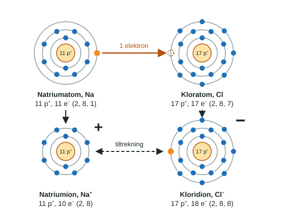
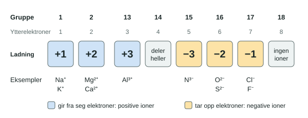
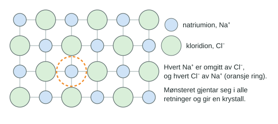
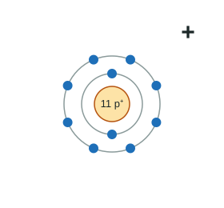

Ioner og ionebinding
Salter finnes overalt i industrien og på laben: i sjøvann, i kjølevann, i råstoffer og i nesten alle løsninger du lager. Salter er bygd opp av ioner. Når et instrument måler ledningsevnen i vann, er det egentlig ionene det måler.
Åtteregelen
Edelgassene i gruppe 18 har fullt ytterskall og reagerer nesten ikke. Andre atomer kan også få fullt ytterskall. Det gjør de ved å gi fra seg eller ta opp elektroner.
Dette kalles åtteregelen (oktettregelen): atomer blir stabile når de har 8 elektroner i ytterskallet. Unntaket er når det bare er ett skall. Det er fullt med 2 elektroner, slik som hos helium.
Atomet går den korteste veien til fullt ytterskall. Natrium (2, 8, 1) gir fra seg 1 elektron i stedet for å ta opp 7. Klor (2, 8, 7) tar opp 1 elektron i stedet for å gi fra seg 7.
Hva er et ion?
Et ion er et atom (eller en gruppe atomer) som har fått en elektrisk ladning, fordi det har gitt fra seg eller tatt opp elektroner. Da er antall protoner og elektroner ikke lenger likt.
- Et positivt ion (kation) har gitt fra seg elektroner. Metaller danner positive ioner.
- Et negativt ion (anion) har tatt opp elektroner. Ikke-metaller danner negative ioner.

Navnet endres når klor blir et negativt ion: kloratomet blir et kloridion. Det positive ionet beholder navnet: natriumatomet blir et natriumion.
Hvilken ladning får ionet?
Ladningen kan du finne i periodesystemet. Den avhenger av hvor mange elektroner atomet må gi fra seg eller ta opp for å få fullt ytterskall.

Mange av metallene i midten av periodesystemet (gruppe 3–12) kan danne ioner med ulik ladning. Jern danner for eksempel både Fe2+ og Fe3+. Da skrives ladningen med romertall i navnet: jern(II)klorid er FeCl2, og jern(III)klorid er FeCl3.
Ionebinding og salter
Positive og negative ioner tiltrekker hverandre. Denne tiltrekningen kalles en ionebinding. Den dannes som regel mellom et metall og et ikke-metall.
Et stoff som er bygd opp av ioner, kalles et salt. I et fast salt ligger ionene i et fast, regelmessig mønster, et ionegitter. Hvert natriumion er omgitt av kloridioner, og hvert kloridion er omgitt av natriumioner. Det er derfor saltkorn er små krystaller.

Formelen NaCl betyr at det er like mange natriumioner som kloridioner. Det finnes ingen «NaCl-molekyler».
Eksempel
Aluminium produseres i Norge av aluminiumoksid. Hva er formelen for aluminiumoksid?
Løsning:
- Finn ladningene. Aluminium står i gruppe 13: Al3+. Oksygen står i gruppe 16: O2−.
- Et salt har ingen ladning totalt. Pluss og minus må gå opp i opp.
- Finn det minste tallet som både 3 og 2 går opp i: 6.
- For å få +6 trengs 2 aluminiumioner: 2 · (+3) = +6.
- For å få −6 trengs 3 oksidioner: 3 · (−2) = −6.
Svar: Al2O3. Kontroll: +6 − 6 = 0.
Navn på salter
Først kommer navnet på metallet. Så kommer navnet på det negative ionet, som for enkle ioner slutter på -id. Eksempler er natriumklorid (NaCl), magnesiumoksid (MgO) og kaliumsulfid (K2S).
Noen ioner består av flere atomer. De heter sammensatte ioner. De fleste er negative, og du møter dem ofte på laben. Et viktig positivt sammensatt ion er ammonium, NH4+, for eksempel i ammoniumklorid (NH4Cl). Ammoniumsalter er derfor salter uten metall.
| Enkle ioner | Navn | Sammensatte ioner | Navn | Eksempel |
|---|---|---|---|---|
| Cl− | klorid | OH− | hydroksid | NaOH, natriumhydroksid |
| O2− | oksid | SO42− | sulfat | CuSO4, kobbersulfat |
| S2− | sulfid | NO3− | nitrat | AgNO3, sølvnitrat |
| F− | fluorid | CO32− | karbonat | CaCO3, kalsiumkarbonat (kalk) |
Egenskapene til salter
- Høyt smeltepunkt. Ionebindingene er sterke. Natriumklorid smelter først ved 801 °C.
- Harde og sprø. Saltkrystaller knuses lett.
- Leder ikke strøm i fast form. Ionene sitter fast i gitteret.
- Leder strøm når saltet er smeltet eller løst i vann. Da kan ionene bevege seg.
Den siste egenskapen brukes mye i industrien. Et instrument som måler ledningsevne, viser hvor mye ioner det er i vannet. Slik kan driften følge med på saltinnholdet i for eksempel kjølevann, prosessvann og avløp. Ved aluminiumsverkene utnyttes det at smeltede ioner leder strøm: aluminium lages ved å sende strøm gjennom aluminiumoksid som er løst i en saltsmelte (kryolitt).
Ikke alle salter er like ufarlige som bordsalt. Sølvnitrat er etsende og gir svarte flekker på huden. Kobbersulfat er helseskadelig hvis du svelger det, og giftig for livet i vann. Les sikkerhetsdatabladet, bruk vernebriller og hansker, og hell aldri løsninger med tungmetaller i vasken.
Test deg selv
Hva viser figuren?

- et natriumatom
- et natriumion, Na+
- et neonatom
11 protoner betyr natrium. Med bare 10 elektroner har det ett pluss for mye, altså Na+. Et neonatom har 10 protoner.
Hva sier åtteregelen?
- Atomer blir stabile med 8 elektroner i ytterskallet.
- Atomer har 8 protoner.
- Atomer har 8 skall.
Unntaket er når det bare er ett skall. Da er det fullt med 2.
Magnesium har elektronene 2, 8, 2. Hvilket ion danner magnesium?
- Mg+
- Mg2+
- Mg2−
Magnesium gir fra seg de 2 ytterelektronene.
Hvorfor blir klor negativt når det blir et ion?
- Det gir fra seg et proton.
- Det gir fra seg et elektron.
- Det tar opp et elektron.
17 protoner og 18 elektroner gir ladning −1.
Hva er formelen for kalsiumklorid?
- CaCl
- CaCl2
- Ca2Cl
Ca2+ trenger to Cl− for at ladningene skal gå opp i opp.
Hvorfor leder en saltløsning strøm, mens fast salt ikke gjør det?
- I løsningen kan ionene bevege seg.
- Vann leder alltid strøm.
- Fast salt har ingen ioner.
I fast salt sitter ionene fast i gitteret.
Ordliste
| Begrep | Forklaring | Engelsk |
|---|---|---|
| åtteregelen | Atomer har en tendens til å få 8 elektroner i ytterskallet, slik edelgassene har. De minste atomene, som hydrogen, nøyer seg med 2. | |
| ion | Atom eller gruppe av atomer som har gitt fra seg eller tatt opp elektroner, og derfor har ladning. | |
| positivt ion (kation) | Ion som har gitt fra seg elektroner og fått positiv ladning. Dannes typisk av metaller. | |
| negativt ion (anion) | Ion som har tatt opp elektroner og fått negativ ladning. Dannes typisk av ikke-metaller. | |
| ionebinding | Tiltrekning mellom positive og negative ioner, typisk mellom metall og ikke-metall. | |
| salt | Stoff som er bygd opp av positive og negative ioner, for eksempel natriumklorid (NaCl). | |
| ionegitter | Fast, regelmessig mønster av ioner i et fast salt. | |
| sammensatt ion | Ion som består av flere atomer, for eksempel sulfat, SO42−. | |
| ledningsevne | Hvor godt et stoff leder elektrisk strøm. I en løsning øker den med mengden frie ioner. | conductivity |
Les mer
- Kjemien stemmer, kapittel 3. Oppgaver: 3.1.1, 3.1.2, 3.2.1 og 3.2.2.
Om kildene: Teksten, eksemplene og figurene på denne siden er laget for dette nettstedet. Siden bygger på undervisningsopplegg i kjemiprosess- og laboratoriefag ved Sauda vgs, som er utarbeidet med utgangspunkt i blant annet Kjemien stemmer, Laboranten og åpne nettkilder.